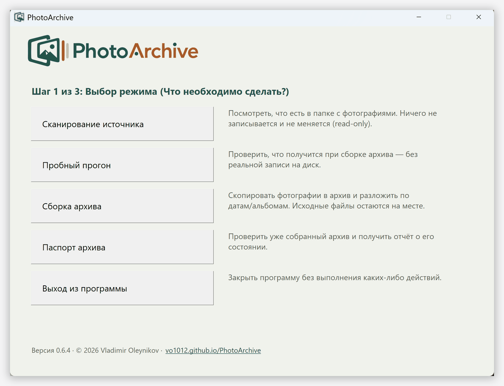
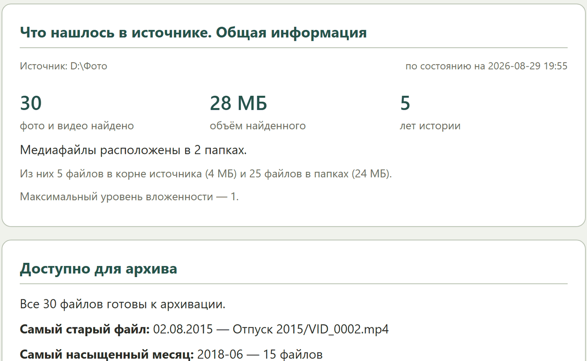

Только копирование
Программа не изменяет и не удаляет ваши файлы. Она создаёт новый архив, а оригиналы остаются ровно там, где были. Записывать что-либо в исходную папку она попросту не умеет.
Бесплатная программа для наведения порядка в семейном фото- и видеоархиве
PhotoArchive собирает ваши фотографии и видео с дисков, флешек и старых бэкапов в один аккуратный архив: раскладывает по альбомам и датам, не копируя одно и то же дважды. Работает только на вашем компьютере.
Домашние фотографии копятся годами и разбредаются повсюду:
С каждым годом всё только запутаннее. Разобрать некогда, да и непонятно, с чего начать.
Если знакомо — PhotoArchive ровно для этого и сделан.
Со временем фотографии накапливаются повсюду — на компьютере, старых флешках и дисках, в скачанных архивах. PhotoArchive проходит по всем этим источникам и собирает снимки в одно упорядоченное место: то, что вы осмысленно раскладывали по папкам, становится альбомами, а всё остальное аккуратно раскладывается по дате съёмки. Точные повторы, пришедшие с разных носителей, не копируются дважды.
Ваши фотографии заслуживают бережного отношения.
Программа не изменяет и не удаляет ваши файлы. Она создаёт новый архив, а оригиналы остаются ровно там, где были. Записывать что-либо в исходную папку она попросту не умеет.
Никакого интернета. Обработка идёт только на вашем компьютере, ни одна фотография его не покидает. Определение города по GPS-метке фото работает офлайн — через встроенную базу городов, без обращения в интернет.
Перед реальной сборкой можно запустить сканирование и пробный прогон — они не меняют ваши файлы и заранее показывают, что получится. Настоящая сборка начинается только после того, как вы всё проверите на последнем экране и нажмёте «Начать».
Когда невозможно быть до конца уверенным в правильном решении, программа предпочитает сохранить лишнюю копию, а не потерять снимок. Место на диске всегда можно освободить — потерянную семейную фотографию вернуть нельзя.
Программа не пытается выглядеть модно: одно окно, несколько крупных кнопок, никаких меню и настроек. Так задумано — там, где дело касается ваших фотографий, нечему вас отвлекать и негде случайно что-то испортить.
После запуска PhotoArchive.exe открывается одно окно — простой мастер из
трёх экранов; программа так и подписывает их: «Шаг 1 из 3», «Шаг 2 из 3» и «Шаг 3 из 3».
На первом экране вы выбираете, что сделать, — один из четырёх режимов. Два следующих,
папки и проверка, одинаковы для любого выбора. Никаких сложных настроек и десятков
кнопок; остановить программу можно в любой момент.
Ничего лишнего: одно окно и несколько крупных кнопок с понятными названиями — рядом с каждой подсказка, что она делает. На первом экране вы выбираете, что сделать: посмотреть, что лежит в папке, прикинуть результат без записи на диск, собрать архив или проверить уже собранный. «Сканирование источника» вообще ничего не меняет — только смотрит и считает, с него удобно начать.

Это выбор на первом экране мастера. Для первого знакомства режимы удобно пройти сверху вниз: сначала посмотреть, что есть и что получится, потом собрать.
Посмотреть, что лежит в папке или на диске: сколько фото и видео, сколько места, нет ли повреждённых файлов. Ничего не записывает — только читает.
Прикинуть результат сборки, ничего не записывая: сколько скопируется, сколько уже есть и не задвоится, хватит ли места.
Собрать архив по-настоящему: разложить по альбомам и датам, не копируя повторы. Единственный режим, который пишет на диск, — и только после кнопки «Начать».
Проверить уже собранный архив в любой момент: точные повторы, похожие кадры, испорченные файлы, ненадёжные даты. Работает, даже если в архиве что-то потом переносили вручную.
Одни и те же для всех четырёх режимов — меняется только то, что вы выбрали на первом экране.
На первом экране нажимаете одну из четырёх кнопок выше — что именно вы хотите сделать.
Через обычное окно Windows выбираете, откуда взять фотографии (папку или целый диск) и, если собираете архив, — куда его сложить. Ничего вводить руками не нужно.
Последний экран ещё раз показывает выбранные папки и обычным языком описывает, что сейчас произойдёт. Настоящая работа начинается только после нажатия — по случайному клику не запустится. Дальше идёт индикатор прогресса, а в конце — понятный отчёт. Ваши оригиналы остаются на месте.
Сбор большого архива — небыстрый процесс: программа сверяет каждый файл с тем, что уже собрано, чтобы ничего не задвоить. На больших объёмах — сотни гигабайт, много видео, чтение с внешнего диска — это может занять несколько часов. На крупном файле индикатор иногда подолгу стоит на месте: программа проверяет его — это нормально, просто дайте ей время.
Прервать работу можно в любой момент — недописанный файл в архив попасть не может. Повторный запуск сам разберётся, что уже собрано, и продолжит с этого места, ничего не задвоив.
Внутри папки архива появятся две части — Albums и ByDate. Каждый файл попадает в архив один раз, в одно из этих мест, а не в оба сразу.
Если снимки лежали в папке с понятным названием — «Свадьба», «Горы 2019», — программа считает её готовым альбомом и сохраняет в Albums целиком, ровно как было у вас.
А если папка без ясного названия, программа не берётся угадывать, к какому альбому отнести эти снимки, — вместо этого она наводит порядок по-другому: копирует их по годам и месяцам съёмки в ByDate. Найти нужное потом легко по дате, а при желании эти фотографии можно вручную разложить по своим альбомам — или оставить как есть.
Точные копии одного и того же файла, пришедшие с разных дисков, программа распознаёт по содержимому и не копирует дважды — имя роли не играет. А вот похожие кадры из серийной съёмки она не выбрасывает: программа не берётся решать, какой из них «лучший», и сохраняет все — лишний снимок всегда можно удалить вручную, а решающий кадр так не потерять.
После каждого запуска программа готовит наглядный отчёт, который открывается в обычном браузере на этом же компьютере. В нём видно, сколько найдено фотографий и видео, какие годы представлены лучше всего, есть ли снимки без даты и что стоит проверить вручную. Ничего устанавливать и никуда отправлять не нужно.

Не торопитесь удалять оригиналы, пока не убедитесь, что готовый архив вас полностью устраивает. Дело не в надёжности программы — она только копирует, ничего не меняя в исходниках, — а в том, что лишь вы решаете, всё ли разложено так, как вам хотелось: где альбом, где по датам. Оригиналы целы, поэтому пересобрать архив с другими настройками можно когда угодно — спешить с удалением незачем.
«Самое ценное, что хранится на моём компьютере, занимает совсем немного места. Это семейные фотографии. Компьютер можно заменить, жёсткий диск — купить новый. Но невозможно заново сделать фотографию человека, которого уже нет рядом.
Я долго искал программу, которой действительно доверил бы фотографии своей семьи, — и, не найдя, решил написать её сам. Такую, которая не сделает ничего без моего ведома и не поставит снимки под угрозу из-за ошибки, моей или своей.
Берегите свои фотографии — с годами их ценность только возрастает».
PhotoArchive работает не только через меню, но и из командной строки. Ниже — кратко; полностью — в README.
analyze — анализ источника или проверка целостности готового архива, без записи.archive — сборка архива, с холостым прогоном (--dry-run) для предварительной проверки.--source, --source-list, --source all) и осмысленные коды возврата для скриптов.photoarchive_config.yaml)VIDEO_TS) архивируется как единый диск.exiftool, ffmpeg, 7z, unrar) уже в комплекте. Полный аудит: CSV-логи по каждому файлу.Подходит как этап безопасной offline-гигиены данных: перед импортом в каталогизаторы (digiKam, Lightroom), перед сборкой ML/CV-датасетов (дедуп не даёт похожим кадрам протекать между train/val) или перед холодным архивным хранением.
Полное описание команд и настроек — в README. Список команд также доступен по
PhotoArchive.exe --help.
Всё, что нужно знать о программе, — простым языком и по порядку. Любой документ можно открыть прямо в браузере или скачать себе. Рекомендуем начать с быстрого старта.
Как собрать первый архив, по шагам, без технических подробностей.
Практические примеры для нетипичных случаев и частых вопросов.
Зачем нужна эта программа и какими принципами она руководствуется.
Точные параметры, настройки и детали алгоритмов. Для тех, кому нужны подробности.
Открытый код под лицензией Apache 2.0. Можно изучить, как именно работает программа.
Кто может выпустить релиз, откуда берётся .exe и как устроена его подпись.
Последняя версия — на странице релизов
Скачивание начнётся сразу по кнопке, без перехода на GitHub. Выберите, что удобнее:
Устанавливать ничего не нужно — программа не вносит изменений в Windows. Рядом с ней появятся её рабочие файлы, поэтому держите её в отдельной папке (в zip-комплекте она уже внутри). Работает откуда угодно — даже с флешки.
При первом запуске Windows может показать синее окно «Windows защитила ваш компьютер» — это стандартное предупреждение для новых программ, а не ошибка. Нажмите «Подробнее» → «Выполнить в любом случае». Исходный код открыт, программу можно проверить.
Проект подал заявку на бесплатную подпись .exe через
SignPath Foundation
для open-source проектов — после одобрения предупреждение выше исчезнет. Подробнее в
Политике подписи кода.
.exeИсходный код открыт под лицензией Apache 2.0 — любой может проверить, как именно работает программа.
PhotoArchive только начинает свой путь. Самая ценная поддержка сейчас — это ваш опыт: попробовать, рассказать другим, сообщить об ошибке.
Программа бесплатна и останется такой. Если однажды вы захотите поддержать разработку — это можно сделать, например, добровольным пожертвованием. Это не оплата программы и не открывает никаких дополнительных функций. Актуальный способ подскажет автор.